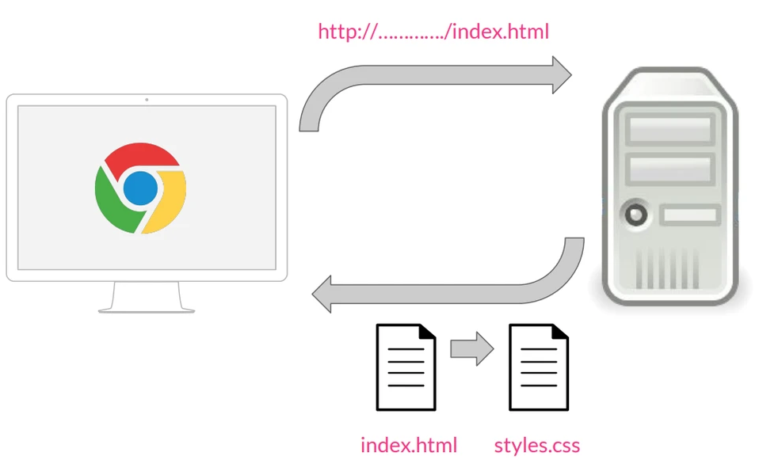

Objetivo general
El objetivo del CSS es el encargado de dar diseño, organización y un buen aspecto a una página web al ser visualizado por las personas.
Objetivos específicos
- Es el encargado de dale color e iluminación a letras, fondos de una página web con unos ciertos códigos q tiene una funcionalidad diferente para cada cosa q uno dese hacer en nuestro cito web.
- en la organización podemos hacer los ajustes a todo tipo de letra, imagen, icono, formas para poder un buen aspecto al sitio web llagando al alcance de las personas.
- el CSS es una de las formas más elegantes q tiene HTML para que de un buen aspecto al sitio con una cantidad de código que ofrece CSS, llegando a las expectativas de los diseños planteados por el creador de la página web para las personas se sientan muy amigables con el sitio.
Qué significa CCS3
CSS3 es una tecnología que ha tenido una evolución en el tiempo, que actualmente se encuentra en su versión 3, como su propio nombre indica.
Sus siglas corresponden a “Cascading Style Sheets”, que tiene el siguiente significado:
- Cascading, que significa que los estilos que aplicamos a los elementos de una página web se propagan a los elementos que contiene, se propagan en cascada.
- Style, porque mediante CSS lo que hacemos es aplicar estilos visuales a los distintos elementos de nuestra página web.
- Sheets, que significa hojas, porque los estilos de una página web se añaden en ficheros aparte, en ficheros con la extensión .css de manera general.
CSS ha ido evolucionando desde hace 25 años a la versión actual, que es CSS3, pero su función es la misma, sirve para dar estilos visuales a las páginas web.
Definición de CSS3
Una definición más formal de CSS sería la siguiente que aparece en Wikipedia:
CSS es un lenguaje de diseño gráfico que permite definir y crear la presentación de un documento estructurado escrito en un lenguaje de marcado. Es muy usado para establecer el diseño visual de los documentos web e interfaces de usuario escritas en HTML.
En la propia definición de CSS vemos que está muy ligado desde su nacimiento a HTML. Desde que nació, el objetivo de CSS fue poner un poco de orden a la hora de aplicar los estilos a las páginas web.CSS ha ido evolucionando desde hace 25 años a la versión actual, que es CSS3, pero su función es la misma, sirve para dar estilos visuales a las páginas web.
Funcionamiento
Vamos a ver en un pequeño esquema qué es lo que sucede desde que se solicita una página web hasta que se le aplica el estilo. El proceso es el siguiente:

Cuando desde un navegador, por ejemplo Chrome, solicitamos una página a través de una dirección, por ejemplo http://..../index.html, esta petición va a un servidor web, que nos devuelve la página que se ha solicitado.
Para aplicar estilos en las páginas HTML, se utiliza un fichero aparte, una hoja de estilos con la extensión .css, por lo que cuando estos dos documentos llegan al navegador, va a leer el documento HTML, le aplica los estilos CSS y lo muestra.
¿Para qué sirve el CSS?
Como hemos mencionado, el CSS es un lenguaje informático que especifica cómo se presentan los documentos a los usuarios: cómo se diseñan, compaginan, etc.
Un documento suele ser un archivo de texto estructurado con un lenguaje de marcado: HTML es el más común, pero también existen otros como SVG o XML.
Presentar un documento a un usuario significa convertirlo en un formulario que el público pueda utilizar. Los navegadores, como por ejemplo Firefox, Chrome o Edge, están diseñados para presentar documentos visualmente en una pantalla de ordenador, un proyector o una impresora.
Nota Un navegador también recibe el nombre de agente de usuario, que consiste en un programa informático que representa a una persona dentro del sistema. Los navegadores son el modelo principal de agente de usuario en el que pensamos cuando hablamos de CSS, pero no son el único. Hay otros documentos de usuario disponibles, como los que convierten documentos HTML y CSS en PDF para imprimir.
El CSS se puede usar para estilos de texto muy básicos como, por ejemplo, cambiar el color y el tamaño de los encabezados y los enlaces. Se puede utilizar para crear un diseño, como podría ser convertir una columna de texto en una composición con un área de contenido principal y una barra lateral para información relacionada. Incluso se puede usar para crear efectos de animación. Echa un vistazo a los enlaces de este párrafo para ver ejemplos específicos.
Sintaxis del CSS
El CSS es un lenguaje basado en reglas: cada usuario define las reglas que especifican los grupos de estilos que van a aplicarse a elementos particulares o grupos de elementos de la página web. Por ejemplo: «Quiero que el encabezado principal de mi página se muestre en letras grandes de color rojo».
El código siguiente muestra una regla CSS muy simple que proporcionaría el estilo descrito en el párrafo anterior:
Para aplicar estilos en las páginas HTML, se utiliza un fichero aparte, una hoja de estilos con la extensión .css, por lo que cuando estos dos documentos llegan al navegador, va a leer el documento HTML, le aplica los estilos CSS y lo muestra.
h1 {
color: red;
font-size: 5em;
}
La regla se abre con un selector. Este selecciona el elemento HTML que vamos a diseñar. En este caso, diseñaremos encabezados de nivel uno (<h1>).
Luego tenemos un conjunto de llaves { }. Entre estas habrá una o más declaraciones, que tomarán la forma de pares de propiedad y valor. Cada par especifica cada una de las propiedades de los elementos seleccionados y el valor que queremos dar a esa propiedad.
Antes de los dos puntos, tenemos la propiedad; y después, el valor. Las propiedades CSS admiten diferentes valores, dependiendo de qué propiedad se esté especificando. En el ejemplo anterior, tenemos la propiedad color, que puede tomar varios valores de color. También tenemos la propiedad de font-size, que puede tomar varias unidades de tamaño como valor.
Una hoja de estilo CSS contendrá muchas de estas reglas, escritas una tras otra.
h1 {
color: red;
font-size: 5em;
}
p {
color: black;
}
Algunos valores se aprenden rápidamente, mientras que otros deberán buscarse. Las páginas de propiedades individuales que hay en el proyecto MDN proporcionan una forma rápida de buscar propiedades y sus valores en caso de olvidarlos o desear saber qué más se puede usar como valor.
NotaPuedes encontrar enlaces a todas las páginas de las propiedades CSS (junto con otras características CSS) enumeradas en la referencia CSS del proyecto MDN. Alternativamente, deberías acostumbrarte a buscar «mdn css-feature-name» en tu motor de búsqueda favorito siempre que necesites obtener más información sobre una función CSS. Por ejemplo, intenta buscar «mdn color» y «mdn font-size».